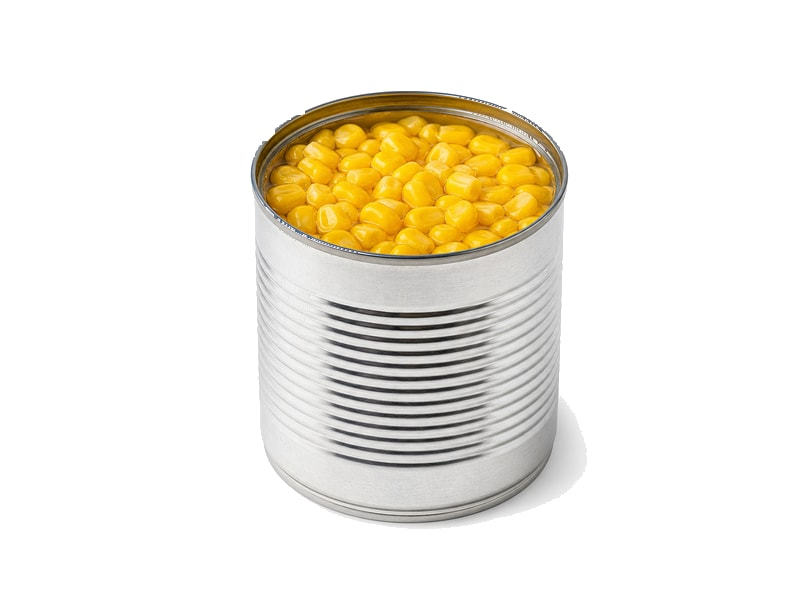

Warzywa
Kukurydza konserwowa
Kukurydza konserwowa: 3.3 g białka, 96 kcal, 17 g węglowodanów i 1.5 g tłuszczu na 100 g. Kategoria: Warzywa.
Kalorie96 kcalna 100 g
Białko / proteiny3.3 g
Węglowodany17 g
Tłuszcz1.5 g
Cena (szac.)~1,00 złza 100 g
Ceny zaktualizowano: maj 2026 (szacunek — ceny w popularnych supermarketach)
Porcja: łyżka (30g)
| Kalorie | 29 kcal |
|---|---|
| Białko | 1 g |
| Węglowodany | 5.1 g |
| Tłuszcz | 0.4 g |
| Cena (szac.) | ~0,30 zł |
Szczegółowe składniki odżywcze na 100 g
| Wartość energetyczna (kalorie) | 96 kcal |
|---|---|
| Białko (proteiny) | 3.3 g |
| Węglowodany | 17 g |
| Tłuszcz | 1.5 g |
| Tłuszcze nasycone | 0.3 g |
| Tłuszcze nienasycone | 1.2 g |
| Witaminy i minerały | Witamina C, Kwas foliowy, Potas |
| Współczynnik kcal / 1 g białka | 29.1 |
| Cena produktu (szac. za 100 g) | ~1,00 zł |
| Cena za 100 g białka (szac.) | ~30,30 zł |